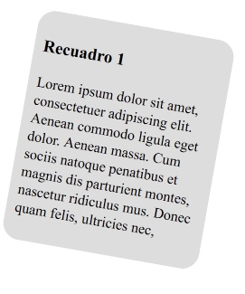
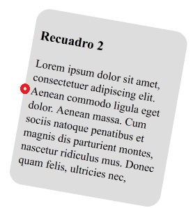

Como vimos en el punto anterior cuando rotamos un elemento HTML siempre hay un punto fijo (por defecto es el punto central del recuadro)
Podemos variar dicho punto y ubicar por ejemplo en cualquiera de los cuatro vértices del recuadro con la siguiente sintaxis:
Elemento {
transform-origin: left top;
}
Elemento {
transform-origin: right top;
}
Elemento {
transform-origin: left bottom;
}
Elemento {
transform-origin: right bottom;
}
Por ejemplo si queremos dejar fijo el vértice superior izquierdo y seguidamente rotar 10 grados en sentido horario luego debemos codificar:
#recuadro1{
-ms-transform: rotate(10deg);
-webkit-transform: rotate(10deg);
-moz-transform: rotate(10deg);
-o-transform: rotate(10deg);
transform: rotate(10deg);
-ms-transform-origin: left top;
-webkit-transform-origin: left top;
-moz-transform-origin: left top;
-o-transform-origin: left top;
transform-origin: left top;
border-radius: 20px;
background-color:#ddd;
width:200px;
padding:10px;
}
Como podemos ver es como disponer un alfiler en el vértice superior izquierdo y seguidamente rotar en el sentido de las agujas de un reloj 10 grados:
Con lo visto podemos disponer el punto de origen en cinco lugares (el centro y los cuatro vértices), pero podemos trasladar a cualquier punto dentro del recuadro el punto del origen con las siguientes sintaxis:
transform-origin: 0% 50%;
El primer valor representa las "x" y el segundo valor representa las "y".
Si queremos disponer el punto de origen en el vértice superior derecho podemos hacerlo como ya conocemos:
Elemento {
transform-origin: right top;
}
O mediante porcentajes:
Elemento {
transform-origin: 100% 0%;
}
Luego podemos mediante porcentajes en x e y desplazar el punto de origen a cualquier parte dentro del elemento HTML (div en este caso)
Por ejemplo si queremos disponer el punto de origen en la mitad del lado izquierdo:
#recuadro2{
-ms-transform: rotate(10deg);
-webkit-transform: rotate(10deg);
-moz-transform: rotate(10deg);
-o-transform: rotate(10deg);
transform: rotate(10deg);
-ms-transform-origin: 0% 50%;
-webkit-transform-origin: 0% 50%;
-moz-transform-origin: 0% 50%;
-o-transform-origin: 0% 50%;
transform-origin: 0% 50%;
border-radius: 20px;
background-color:#ddd;
width:200px;
padding:10px;
margin-top:50px;
}
El punto rojo indica el "punto de origen":
Otra posibilidad es indicar el punto con alguna medida permitida en CSS (px, em etc.), por ejemplo podemos indicar que el punto de origen este 20 píxeles en x y 40 en y:
#recuadro3{
-ms-transform: rotate(10deg);
-webkit-transform: rotate(10deg);
-moz-transform: rotate(10deg);
-o-transform: rotate(10deg);
transform: rotate(10deg);
-ms-transform-origin: 20px 40px;
-webkit-transform-origin: 20px 40px;
-moz-transform-origin: 20px 40px;
-o-transform-origin: 20px 40px;
transform-origin: 20px 40px;
border-radius: 20px;
background-color:#ddd;
width:200px;
padding:10px;
margin-top:50px;
}